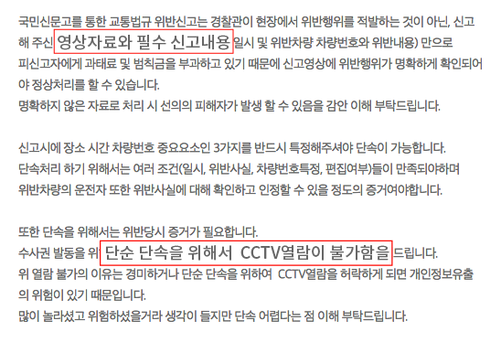
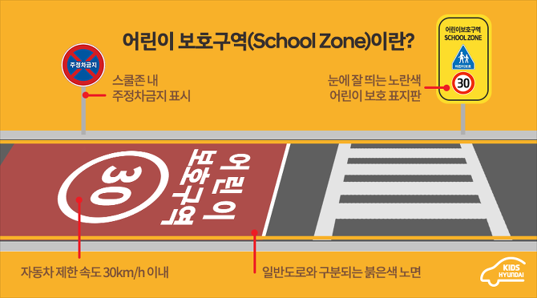
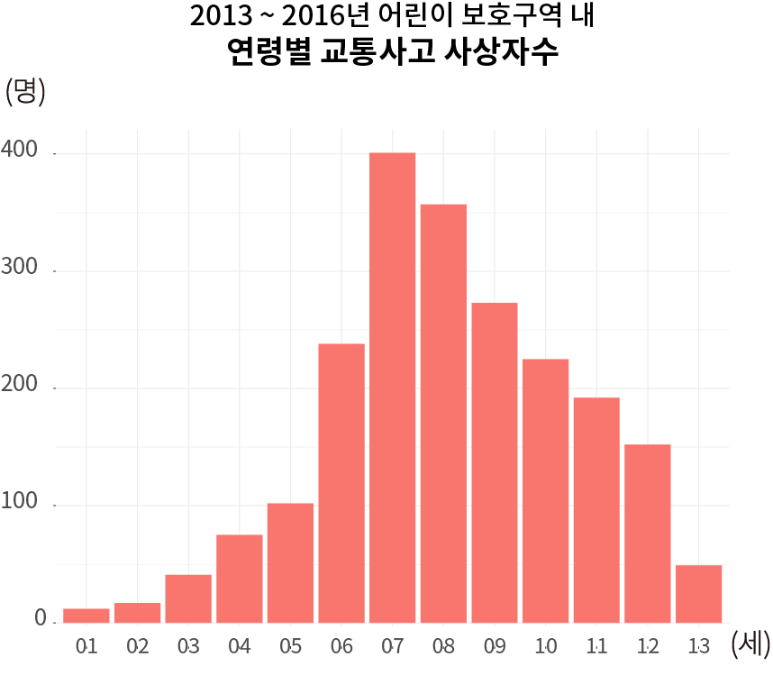
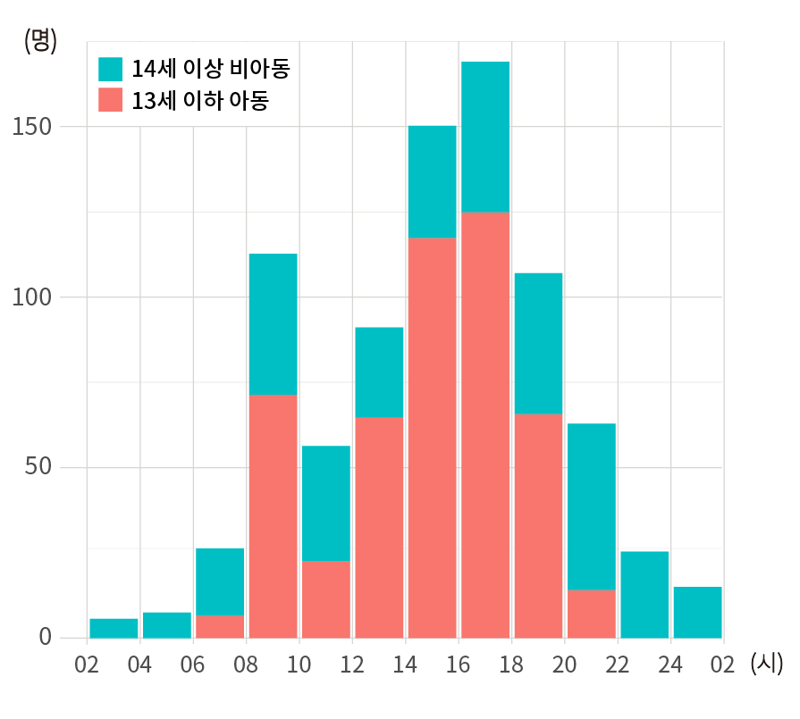
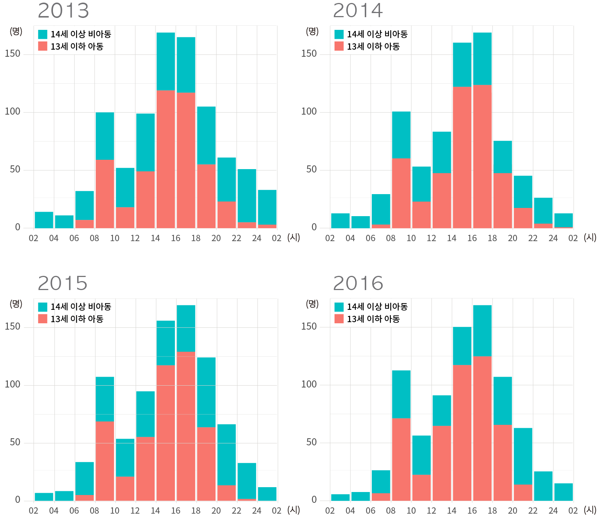
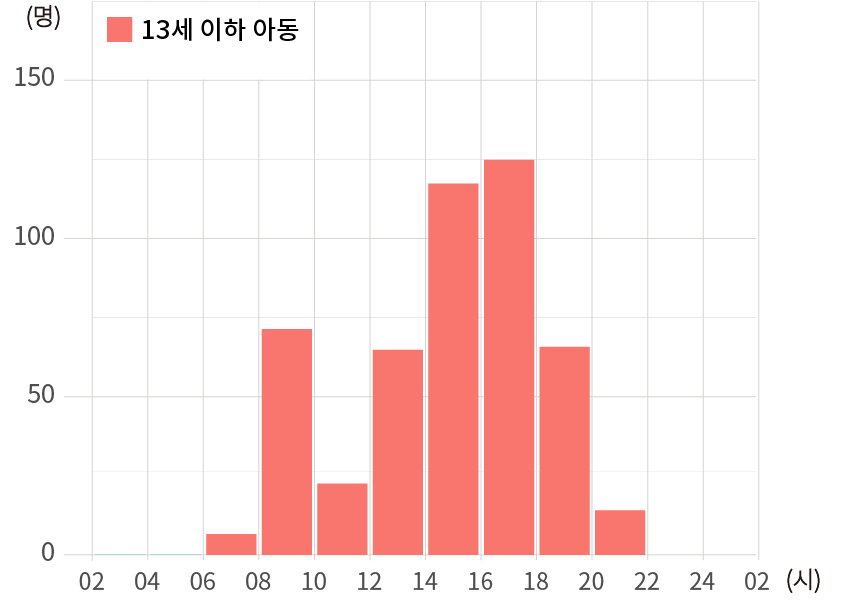
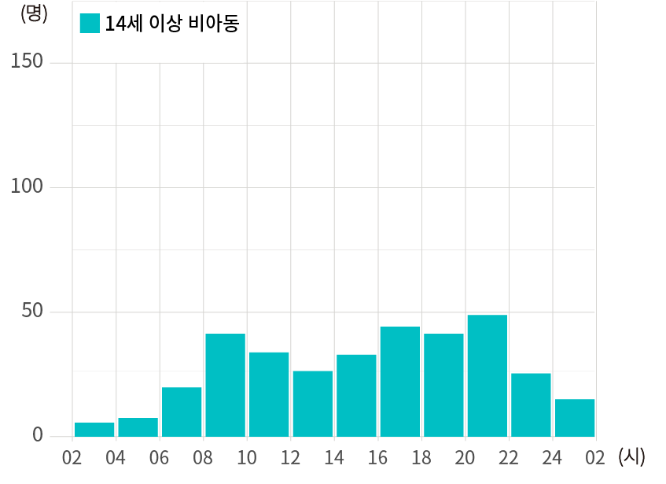

9월 초, 연세대 정문 굴다리 밑 횡단보도에서 교통사고를 당할 뻔했다. 시내버스 한 대가 '빠앙-!' 길게 경적을 울리며 달려왔다. 곧이어 파란불 켜진 횡단보도 한허리를 빠르게 자르고, 나를 포함한 보행자 두 명의 바로 코앞을 스쳐갔다. 한두 발짝만 더 디뎠더라면 큰 참사가 일어났을 것이다.
갑작스레 일어난 일이라 차량 번호를 확인하진 못했지만, 버스가 신호 위반을 하며 통과한 정확한 시간과 장소를 얼른 적어놓은 덕분에 경찰청에 처벌을 요구하는 민원을 넣을 수 있었다. 그리고 '갑작스레 일어난 일이라 경황이 없어 나에겐 사진이나 영상 같은 증거자료가 없으니, 혹시 그 주변에 설치된 CCTV가 있다면 그것으로 판독할 수 있지 않겠냐'는 질문도 추가했다.

그러나 며칠 후 나온 민원 처리 결과는 기대한 바와 달랐다. 서대문경찰서 교통민원실에 따르면, 피신고자에게 과태료 및 범칙금 처분을 내리기 위해서는 그 명백한 증거로 '영상'을 제출해야 한다. 즉, 내가 제보한 사항인 신호 위반이 일어난 시간과 장소, 그리고 차량이 시내 버스라는 사실을 제보하는 것만으로는 단속할 수 없다. 또한, CCTV 관련 문의는 수사권이 발동하지 않는 한 열람이 불가능하다는 내용이다.
선의의 피해자 발생이나 개인정보유출의 문제 방지를 위해 명백한 증거 없이는 단속할 수 없다는 것은 이해되긴 한다. 하지만 많은 승객과 보행자의 안전을 위협하며 운전하는 버스 기사들이 처벌받지 않는다면, 앞으로 비슷한 상황에서 교통사고 희생자는 반드시 생길 것이다.
운 좋게 재빨리 멈춰섰기에 무사했지만, 만약 일반 성인보다 반사가 둔한 어린 아이였다면 분명 화를 면하지 못했을 것이다. 성인들의 통행량이 많아 별의별 일이 일어나는 신촌 번화가라 그렇다 칠 수 있지만, 어린이들의 통행이 특히 잦은 학교 앞 어린이 보호구역에서만큼은 교통사고 위험이 절대로 없어야 함이 마땅하다.
어린이 보호구역, 안전할까?
우선 '어린이 보호구역'이 무엇인지에 대하여 조사했다. 1995년 도로교통법에 의해 어린이 보호구역 지정 및 관리에 관한 규칙이 제정되었다.
이 규칙의 제 3조 ④에 따르면, 초등학교등의 주 출입문을 중심으로 반경 300미터 이내의 도로 중 일정 구간이 보호구역으로 지정된다. 덧붙여 제 2조 용어의 정의에 따르면, "초등학교등"이라 함은 유치원, 초등학교, 특수학교 및 보육시설을 말한다.
또한 이 규칙의 제 9조 ①에 따르면, 지방경찰청장 또는 경찰서장은 법 제12조제1항의 규정에 의하여 보호구역안에서 구간별·시간대 별로 다음 각 호의 어느 하나에 해당하는 조치를 할 수 있다.

1. 자동차의 통행을 금지하거나 제한하는 것
2. 자동차의 정차나 주차를 금지하는 것
3. 운행속도를 시속 30km 이내로 제한하는 것
4. 이면도로를 일방통행로로 지정·운영하는 것
아동 사상자 중 '만 7세 전후'가 제일 많아
아래는 근 4년간(2013, 14, 15, 16년) 어린이 보호구역 내 교통사고로 인한 총 사망자와 부상자 수를 연령별(1살 단위)로 시각화한 결과이다. 교통사고 자료는 1년간의 통계를 이듬해에 자료를 받아 집계하므로 2017년 자료는 포함되지 않았다.

결과물은 꼬리가 왼쪽으로 뻗은 비대칭분포이다. 사상자수는 만 7세에서 최빈값을 갖는다. 만 6세~10세 아동 사상자수가 전체의 70%을 차지한다.
1. 만 7세에서 사상자가 가장 많다. 이는 만 7세가 초등학교 입학연령이므로 생활권이 어린이 보호구역으로까지 확대되었지만, 아직 안전 요령이 아직 미숙하다는 이유와 연관이 있지 않을까 추측된다. 2. 만 7세를 정점으로 연령이 더할수록 사상자 수치는 감소한다. 이는 신체성장과 함께 위험 상황 회피 능력이 발달하고 사회화를 통해 교통안전 요령을 숙지해나가기 때문으로 추측된다.
특이한 사실은, 만 7세부터 하락세를 보이다가 만 12세에서 13세로 넘어가면 사상자가 급격히 감소하는 것이다. 이는 약 68%의 감소율(N세 아동의 사상자수 - (N+1)세 아동의 사상자 수 / N세 아동의 사상자수)을 보인다. 만 7세부터 12세까지 한 살씩 올라감에 따라 사상자수 감소율은 각각 11%, 24%, 15%, 21%인 것에 비하면 매우 높은 비율이다(물론 각 연령의 아동 인구수가 정확하게 반영되지 않았으므로 근거가 약한 비율이라 할 수도 있다).
여러 이유가 있겠지만 무엇보다 만 13세 아동의 생활권이 어린이 보호구역과 겹치지 않기 때문이 아닌가 추측된다. 보통 중학교 입학연령은 만 13세이다. 중학교 앞 교통사고 데이터는 보유하고 있지 않아 확인할 수는 없었지만, 사고가 발생하더라도 어린이 보호구역 내 교통사고에 해당되지 않아 자료가 집계되지 않은 탓일 것이다.
등,하교 시간에 아동들 특히 위험


13-16년 어린이 보호구역 내 시간대별 평균 사상자
데이터 출처 : 도로교통공단 통합DB처
왼쪽 막대그래프는 2013년부터 2016년에 걸쳐 시간대 별 어린이 보호구역 내 사상자 수치의 평균을 1차 시각화한 결과이다. 오른쪽은 각 연도 별로 동일한 시각화를 한 결과이다. 네 연도의 분포 간 큰 차이를 보이지 않아 평균치로 시각화를 진행하였다.
14세 이상 비아동들의 교통사고로 인한 사상자 발생도 적지 않게 일어나고 있다. 하지만 프로젝트의 목적이 아동 교통사고 위험이 높다다는 점을 부각하는 것이므로, 왼쪽 그래프에서 빨간색 부분과 파란색 부분을 따로 시각화해서 살펴보자.


위 두 개의 플랏에서 확인할 수 있듯이 14세 이상 비아동의 사상자수의 분포는 13세 이하 아동의 사상자수의 분포보다 더 고르다. 특히 8~10시와 14~18시 등하교시간의 사상자수는 아동의 분포에서 더욱 두드러지는 것을 볼 수 있다.
물론, 비아동의 경우에도 해당 시간에 높은 사상자수를 보이고 있지만, 다른 시간대의 사상자수와 비교하면 아동의 분포에서 보이는 것만큼 급격한 변화를 보이진 않는다.
따라서 13세 이하의 아동이 14세 이상의 비아동 그룹보다 어린이 보호구역 내에서 더 높은 교통사고 위험에 노출되어 있다고 볼 수 있다.
What was most significant about the lunar voyage was not that man set foot on the Moon but that they set eye on the earth.
A Chinese tale tells of some men sent to harm a young girl who, upon seeing her beauty, become her protectors rather than her violators. That's how I felt seeing the Earth for the first time. I could not help but love and cherish her.
For those who have seen the Earth from space, and for the hundreds and perhaps thousands more who will, the experience most certainly changes your perspective. The things that we share in our world are far more valuable than those which divide us.
The Final Frontier
There can be no thought of finishing for ‘aiming for the stars.’ Both figuratively and literally, it is a task to occupy the generations. And no matter how much progress one makes, there is always the thrill of just beginning.
There can be no thought of finishing for ‘aiming for the stars.’ Both figuratively and literally, it is a task to occupy the generations. And no matter how much progress one makes, there is always the thrill of just beginning.
The dreams of yesterday are the hopes of today and the reality of tomorrow. Science has not yet mastered prophecy. We predict too much for the next year and yet far too little for the next ten.
Spaceflights cannot be stopped. This is not the work of any one man or even a group of men. It is a historical process which mankind is carrying out in accordance with the natural laws of human development.
Reaching for the Stars
As we got further and further away, it [the Earth] diminished in size. Finally it shrank to the size of a marble, the most beautiful you can imagine. That beautiful, warm, living object looked so fragile, so delicate, that if you touched it with a finger it would crumble and fall apart. Seeing this has to change a man.
To go places and do things that have never been done before – that’s what living is all about.
Space, the final frontier. These are the voyages of the Starship Enterprise. Its five-year mission: to explore strange new worlds, to seek out new life and new civilizations, to boldly go where no man has gone before.
As I stand out here in the wonders of the unknown at Hadley, I sort of realize there’s a fundamental truth to our nature, Man must explore, and this is exploration at its greatest.